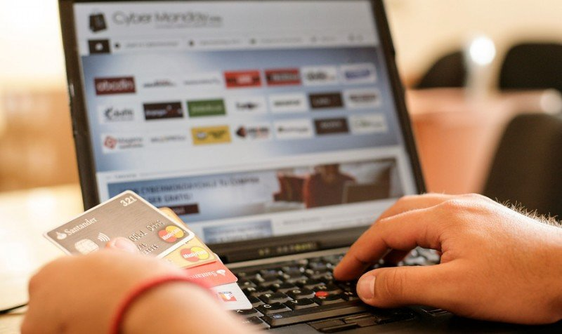

+34 924 25 17 61
+34 924 25 17 61
 guadalupe@fundacionloyola.es
guadalupe@fundacionloyola.esImpacto medioambiental de las compras online
El comercio online, ha ido ganando popularidad en los últimos años por la comodidad que nos proporciona a la hora de comprar sin salir de casa, y a su vez, nos proporcionan grandes ofertas para que compremos a través de este medio. Nosotros solo somos conscientes de que pedimos un producto y este nos llega a casa. Pero este acto, tiene grandes consecuencias a nivel medioambiental, pero creemos que no somos responsables de ellos; por lo que, en esta página web, os mostraré el gran impacto medioambiental que conllevan las compras online.
|
 | |||||||||||||||
Haciendo referencia a la introducción de esta página web, en estos párrafos se muestran todos los efectos negativos que tienen las compras online.
En primer lugar, las emisiones contaminantes, los envíos 24h, exceso de residuos, el empaquetado y las devoluciones.
Emisones contaminantes
Para poder entregarnos los pedidos, los paquetes pasan por muchos medios de transporte, y cada uno de ellos, tienen muchisimo índice de contaminación.
Envíos 24h
Promueven el reparto de paquetes sin que la carga del vehículo transportista siquiera esté completa, por lo que tiene que dar más viajes. Esto conlleva más contaminación C02.
Exceso de Residuos
Todos los pedidos online, suelen tener material sobrante a la hora del embalaje (plásticos excesivos, cajas muy grandes para pedidos muy pequeños, materiales no reciclables, etc).
Cuando el cliente recibe el paquete, todos esos materiales van a la basura, y muchos de ellos sin ser reciclados.
Empaquetado
Muchas empresas, además del excesivo embalaje, empaquetan los pedidos con publicidad o elementos que representan a la empresa vendedora. Estos materiales, también van a la basura.
Devoluciones
Cuando un cliente no está satisfecho con el pedido, lo puede devolver. Esto, además del impacto medioambiental del envío, genera la contaminación que conlleva que un paquete sea devuelto. Enviar el paquete desde casa del cliente, hasta el almacén nuevamente, y el paquete tiene que pasar por los transportistas de nuevo.